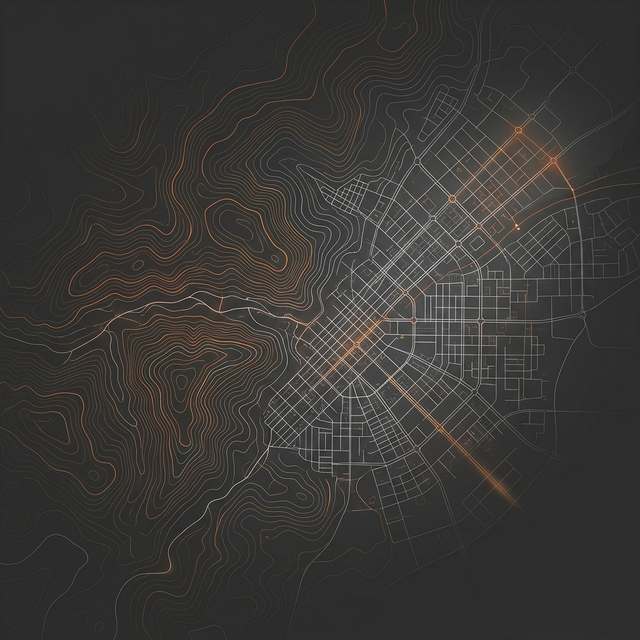

Território, Cidade e Sustentabilidade
Inteligência territorial e cadastro multifinalitário.
Desenvolvimento de soluções tecnológicas para a gestão e o planejamento urbano, integrando geotecnologias, cadastro técnico, políticas de solo e análises espaciais avançadas.

Florianópolis · SC
Linhas de pesquisa
Carregando…
Observar.
Analisar.
Transformar o território.
Pesquisa aplicada para cidades mais justas, sustentáveis e com informação territorial de qualidade.
Conheça o grupo01 / Quem somos
Institucional
02 / Equipe
Quem faz
o GOTT.
04 / Produção